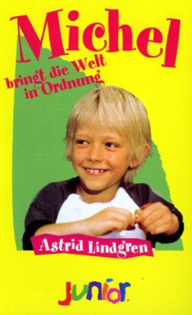

IMDB-Wertung: 7.2 / 10
IMDB-Wertung: 7.2 / 10  Metascore:
Metascore: 
Emil visit a country auction, help Lina pull out a tooth and raise his pig to do tricks.
 IMDB-Wertung: 7.2 / 10 Metascore:
Emil visit a country auction, help Lina pull out a tooth and raise his pig to do tricks.
Jahr: 1973
Dauer: 97 Minuten
FSK:
Land: Schweden Studio: Wild UtopiaTonspuren:
Untertitel:
Auflösung: 720p (1280x720) Größe: 2068 MB
Regisseur: Olle Hellbom
Drehbuch: Astrid Lindgren, Astrid Lindgren
Soundtrack: Georg Riedel
Darsteller:
 Allan Edwall als Anton
Allan Edwall als Anton Björn Gustafson als Alfred
Björn Gustafson als Alfred Maud Hansson als Lina
Maud Hansson als Lina Pierre Lindstedt als Bulten i Bo
Pierre Lindstedt als Bulten i Bo Georg Årlin als Prästen
Georg Årlin als Prästen Gisela Hahn als Lärarinnan
Gisela Hahn als LärarinnanDatei: X:\Kinder Collections\Astrid Lindgren\Immer dieser Michel 3. - Michel bringt die Welt in Ordnung (1973, FSK, 1280x720).mkv seit 30.08.2018
Festplatte: Kinder-Filme+Trick
 Es gibt insgesamt 26 Filme in der Gruppe 'Kinder Collections\Astrid Lindgren'
Es gibt insgesamt 26 Filme in der Gruppe 'Kinder Collections\Astrid Lindgren'